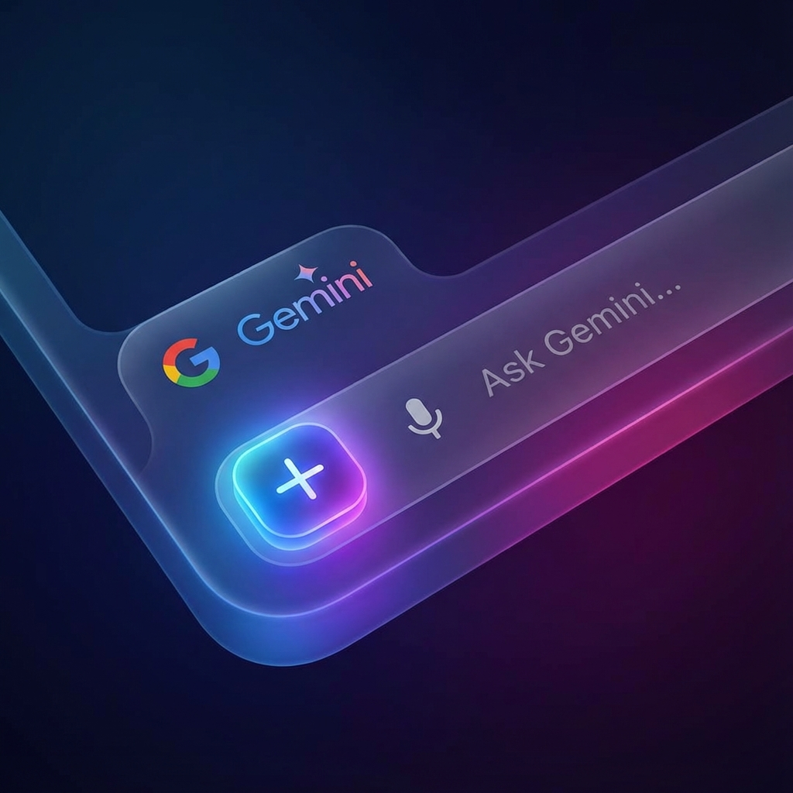

Pokud používáte Google NotebookLM pro správu učiva a Gemini pro kreativitu, zřejmě jste narazili na stejný problém: jsou to dva oddělené světy. Z USA k nám ale přicházejí zprávy o funkci, která mění pravidla hry. Integrace, na kterou jsme všichni čekali, je na obzoru.
Každý digitální učitel to zná. V jednom okně máte otevřený NotebookLM, kam jste pečlivě nahráli pět učebnic a třicet pracovních listů. Je to váš digitální archivář – přesný, věcný, s citacemi. V druhém okně máte Gemini (nebo ChatGPT) – vašeho kreativního asistenta, který umí vymýšlet básničky, scénáře a chrlit nápady.
Doteď jste museli složitě kopírovat výstupy z jednoho do druhého. Archivář neměl fantazii a Kreativec neznal vaše učebnice.
To se ale mění.
Tlačítko „Plus“, které změní vše
Zahraniční influenceři a "beta testeři" v posledních týdnech ukazují novinku, která se začíná objevovat v prémiových účtech Gemini (zejména v USA). Pod nenápadným tlačítkem plus (+) v chatovacím okně Gemini, které dosud sloužilo jen pro nahrávání obrázků nebo souborů, přibyla nová ikona: NotebookLM.
Nejde o pouhé nahrání souboru. Jde o přímé propojení mozků.
Po kliknutí na tuto ikonu si můžete vybrat kterýkoliv ze svých již vytvořených sešitů v NotebookLM. Gemini si v tu chvíli „stáhne“ celou znalostní bázi daného sešitu do své dočasné paměti.
Proč je to "Svatý grál" pro učitele?
Spojení těchto dvou nástrojů řeší největší bolest AI ve školství: rozdíl mezi faktickou přesností a kreativní formou.
NotebookLM (motor RAG) dodá FAKTA. Zaručí, že se AI drží pouze vašeho školního vzdělávacího programu a nevymýšlí si nesmysly.
Gemini (motor Ultra/Pro) dodá KREATIVITU. Umí s těmi fakty pracovat způsoby, které samotný NotebookLM neumí.
3 příklady, jak to využijete v praxi
Představte si, že máte v NotebookLM sešit "Dějepis - Husitství", kde máte naskenovanou učebnici a prameny.
1. Divadelní scénář, který nelže
Samotný NotebookLM vám napíše suché shrnutí. Ale když ho načtete do Gemini, můžete zadat:
Výsledek? Zábavná scénka, která je historicky věrná.
2. Personalizovaný doučovatel
NotebookLM je trochu "robotický". Gemini má empatii.
3. Tvorba vizuálů z textu
NotebookLM neumí kreslit. Gemini ano.
Kdy se dočkáme my?
Je důležité krotit nadšení realitou. Google tuto funkci zavádí postupně (tzv. rollout). Momentálně ji vidíme primárně u uživatelů v USA s placenou licencí (Google One AI Premium/Gemini Advanced).
Z historie ale víme, že funkce, které se osvědčí v USA, putují do Evropy v řádu měsíců.
Co dělat teď?
Nepřestávejte krmit svůj NotebookLM. Budujte si své kvalitní sešity, nahrávejte materiály, čistěte data. Až se ono kouzelné tlačítko objeví i na vašem monitoru, budete mít munici připravenou a okamžitě získáte náskok.
Budoucnost přípravy na výuku není v tom, že za nás AI udělá všechno. Je v tom, že naše precizně připravené podklady (v NotebookLM) dostanou křídla (díky Gemini). A na to se vyplatí počkat.